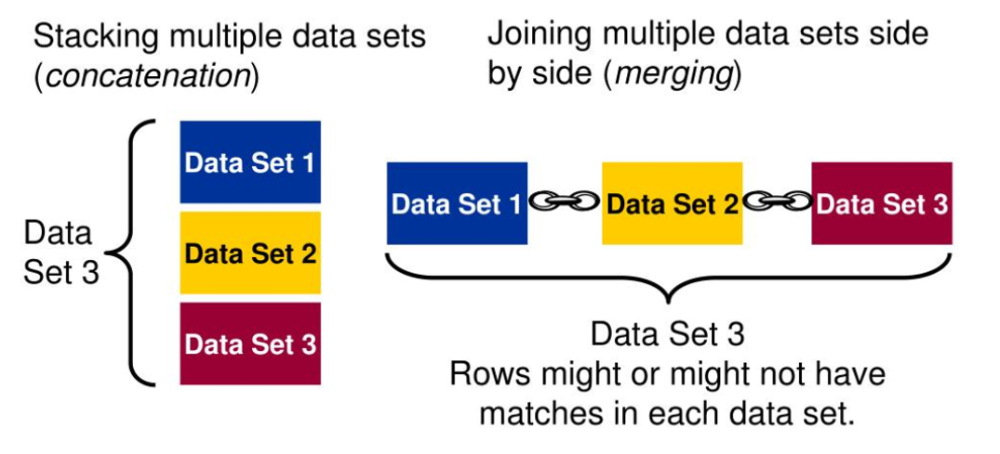
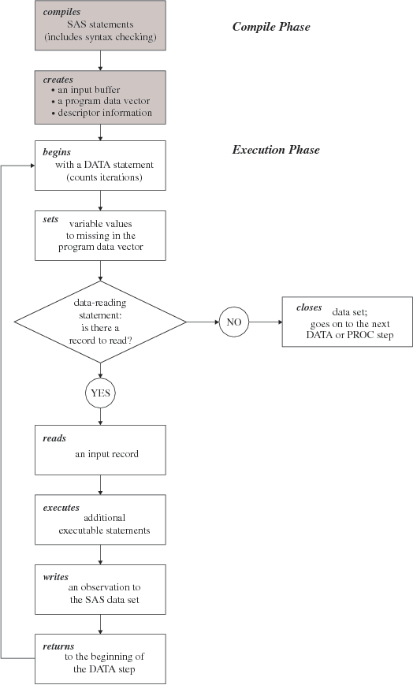
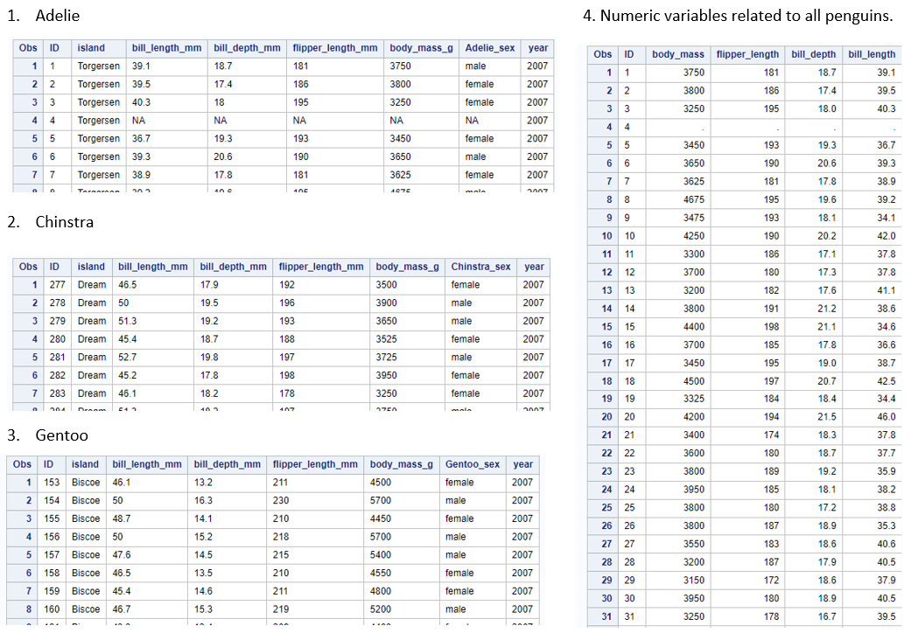
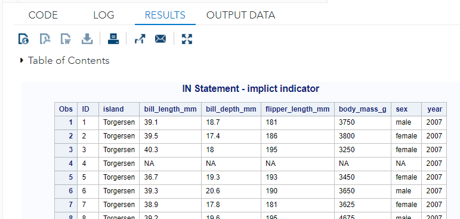
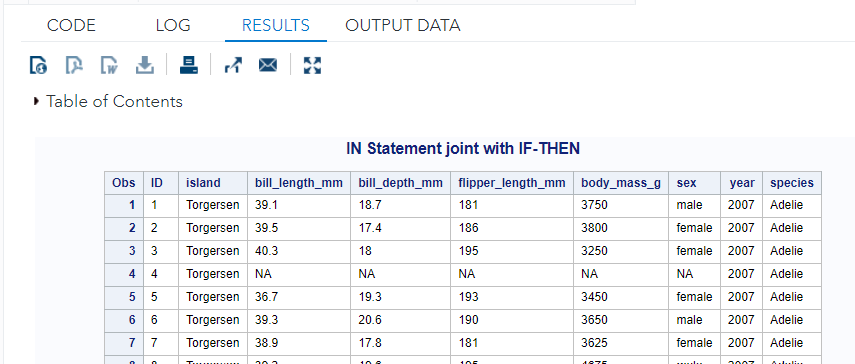
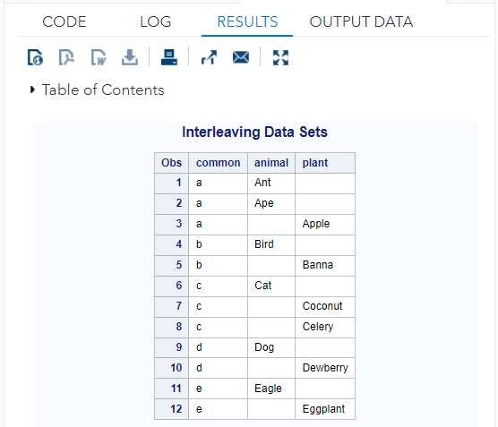
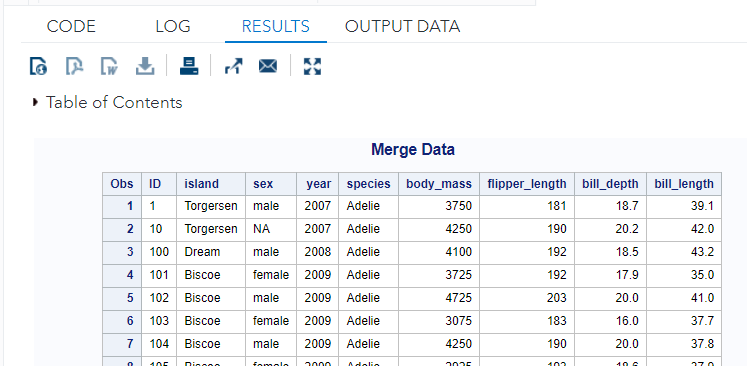

Chapter 9 Combining Data Sets
In real-world applications, aggregating information from different data sources is a routine job for data and analytic professionals. There are two basic types of ways of combining data sets.

Before we move to individual combining methods, we use the following flowchart to explain the process of how the data step creates SAS data records.

Next, we create 5 working data sets based on the penguin data using the following code.
FILENAME pguin URL "https://raw.githubusercontent.com/pengdsci/sta553/main/w02-penguins.csv";
PROC IMPORT DATAFILE = pguin
OUT = penguin
DBMS = CSV
REPLACE;
GETNAMES = YES;
RUN;
DATA numeric_penguin; /* define a new data set */
SET Penguin; /* copy the data original data*/
body_mass = input(body_mass_g, 8.); /* conversion */
flipper_length = input(flipper_length_mm, 8.);
bill_depth = input(bill_depth_mm, 8.);
bill_length = input(bill_length_mm, 8.);
ID = VAR1;
KEEP ID body_massflipper_length bill_depth bill_length;
RUN;
DATA char_penguin;
SET penguin;
ID = VAR1;
DROP VAR1;
RUN;
DATA Adelie Chinstra Gentoo;
SET penguin;
IF species = 'Adelie' THEN OUTPUT Adelie;
IF species = 'Chinstra' THEN OUTPUT Chinstra;
IF species = 'Gentoo' THEN OUTPUT Gentoo;
RUN;A glance at the four working data sets is given in the following figure.

9.1 Stacking/Concatenating
To append the observations from one data set to another data set, we concatenate them by specifying the data set names in the SET statement. When SAS concatenates, data sets in the SET statement are read sequentially, in the order in which they are listed. The new data set contains all the variables and the total number of observations from all input data sets.
The syntax is
DATA concat;
SET dataset_a dataset_b;
RUN;
This above code assumes that both data sets have the same variables with the same names. If the same variable with different names, the resulting data set will treat the variables with different names as two different variables, therefore, missing values will be produced. Similarly, if a variable is not in one of the source data sets, the resulting data set will also end up with missing values.
In case of the same variable with different names, we can use REMAE = (old_name = new_name) to rename any variable. At the same time, we may also need to include an indicator variable in the resulting data set to indicate the source of every record.
/* sex in different data sets has different names */
DATA combined_penguin;
SET Adelie(RENAME=(Adelie_sex = sex))
Chinstra(RENAME=(Chinstra_sex = sex))
Gentoo(RENAME=(Gentoo_sex = sex));
RUN;
PROC PRINT DATA = combined_penguin;
RUN;
The resulting combined data set is given below. We can see that the names of sex variables in different data sets have been changed to sex.
9.2 IN Statement and ghost Variable
The issue in the previous combined data set is that the species information is lost. We need to bring that information back to the data set. Therefore different ways to bring this information back. One way to do this is to add a species variable in the individual data sets before concatenating them.
The other way is to use IN = to bring an invisible ghost indicator variable. The reason I call it a “ghost” variable is because you cannot print it out and view the variable!
However, we can define the variable explicitly pick up the values of the ghost variable, and print the explicitly defined variable to see the values of the ghost variable.
/* sex in different data sets has different names */
DATA combined_penguin;
SET Adelie(RENAME=(Adelie_sex = sex) IN = Adelie)
Chinstra(RENAME=(Chinstra_sex = sex) IN = Chinstra)
Gentoo(RENAME=(Gentoo_sex = sex) IN = Gentoo);
RUN;
TITLE "IN Statement - implicit indicator";
PROC PRINT DATA = combined_penguin;
RUN;
IN statement defined an indicator variable but it did not appear in the combined data set. But we can use the value of the invisible indicator to define the actual species variable using a conditional statement (IF-THEN) as explained in the following code.
/* sex in different data sets has different names */
DATA combined_penguin;
SET Adelie(RENAME=(Adelie_sex = sex) IN = Adelie)
Chinstra(RENAME=(Chinstra_sex = sex) IN = Chinstra)
Gentoo(RENAME=(Gentoo_sex = sex) IN = Gentoo);
IF Adelie THEN species = 'Adelie';
IF Chinstra THEN species = 'Chinstra';
IF Gentoo THEN species = 'Gentoo';
RUN;
TITLE "IN Statement joint with IF-THEN";
PROC PRINT DATA = combined_penguin;
RUN;
The above printout indicates that the variable `species ’ has been successfully added to the combined data set.
9.3 Interleaving Data Sets
If we use a BY statement when you concatenate data sets, the result is interleaving. Interleaving intersperses observations from two or more data sets, based on one or more common variables.
Each input data set must be sorted or indexed in ascending order based on the BY variable(s).
The observations in the interleaved data sets are not combined; they are copied from the original data sets in the order of the values of the BY variable.
Observations in each BY group in each data set in the SET statement are read sequentially, in the order in which the data sets and BY variables are listed until all observations have been processed.
Observations in the output data set are arranged by the values of the BY variable.
The new data set contains all the variables and the total number of observations from all input data sets.
The general syntax is
DATA interlv;
SET dataset_a dataset_b;
BY num;
RUN;The following is a toy example.
DATA Animal;
INPUT common $ animal $;
DATALINES;
a Ant
a Ape
b Bird
c Cat
d Dog
e Eagle
;
RUN;
DATA plant;
INPUT common $ plant $;
DATALINES;
a Apple
b Banna
c Coconut
c Celery
d Dewberry
e Eggplant
;
RUN;
* Sort the data by the common variable;
PROC SORT DATA = Animal;
BY Common;
RUN;
PROC SORT DATA = plant;
BY common;
RUN;
DATA InterleaveData;
SET animal plant;
BY common;
RUN;
TITLE "Interleaving Data Sets";
PROC PRINT DATA = InterleaveData;
RUN;The output data set

This method is commonly used in creating longitudinal data sets.
9.4 Merging by Matching
Sometimes we need to combine observations from two or more data sets into a single observation in a new data set according to the values of a same-named variable. This is match-merging, which uses a MERGE statement rather than a SET statement to combine data sets. Each input data set must be sorted or indexed in ascending order based on the BY variable(s). During match-merging, SAS sequentially checks each observation of each data set to see whether the BY values match, then writes the combined observation to the new data set.
We next merge the combined penguin data set and the 4th penguin data set with only numerical variables. Since the numerical variables in the 4th data set have their corresponding character variables, we will drop these character variables that have their corresponding numerical version.
We can do this by dropping these character variables first and then merging them. Next, we will do this by dropping when merging.
**Keep in mind that we must sort the by-variable when we use the BY statement.
PROC SORT DATA = combined_penguin;
BY ID;
RUN;
PROC SORT DATA = numeric_penguin;
BY ID;
RUN;
/** merge two data sets **/
DATA merge_data;
MERGE combined_penguin
numeric_penguin;
BY ID;
DROP flipper_length_mm body_mass_g bill_depth_mm bill_length_mm;
RUN;
TITLE "Merge Data";
PROC PRINT DATA = merge_data;
RUN;
9.5 Summary of Some KEY Words and Statements
- Execution of Merging: After compiling the DATA step, SAS sequentially match-merges observations by moving the pointers down each observation of each data set and checking to see whether the BY values match.
- If Yes, the observations are written to the
PDV(program data vector) in the order in which the data sets appear in the MERGE statement. Values of any same-named variable are overwritten by values of the same-named variable in subsequent data sets. SAS writes the combined observation to the new data set and retains the values in the PDV until the BY value changes in all the data sets. - If No, SAS determines which of the values comes first and writes the observation that contains this value to the
PDV. Then the observation is written to the new data set. - When the BY value changes in all the input data sets, the PDV is initialized to missing. The DATA step merge continues to process every observation in each data set until it has processed all observations in all data sets.
- If Yes, the observations are written to the
- Handling Unmatched Observations and Missing Values: All observations that are written to the PDV, including observations that have missing data and no matching BY values, are written to the output data set.
- If an observation contains missing values for a variable, then the observation in the output data set contains the missing values as well. Observations that have missing values for the BY variable appear at the top of the output data set.
- If an input data set doesn’t have a matching BY value, then the observation in the output data set contains missing values for the variables that are unique to that input data set.
- Renaming Variables: Sometimes you might have same-named variables in more than one input data set. In this case, match-merging overwrites values of the same-named variable in the first data set with values of the same-named variable in subsequent data sets.
- To prevent overwriting, use the RENAME= data set option in the MERGE statement to rename variables
- Excluding Unmatched Observations By default, match-merging combines all observations in all input data sets. However, we might want to select only observations that match two or more input data sets.
- To exclude unmatched observations, use the
IN =data set option and the subsetting IF statement in your DATA step. TheIN =data set option creates a variable (‘ghost’ variable because you cannot see it) to indicate whether the data set contributed data to the current observation. - The subsetting IF statement then checks the
IN =values and writes to the merged data set only observations that appear in the data sets for whichIN =is specified.
- To exclude unmatched observations, use the
- Selecting Variables: We can specify the variables you want to drop or keep by using the
DROP =andKEEP =data set options.- When match-merging, you can specify these options in either the DATA statement or the MERGE statement, depending on whether or not you want to process values of the variables in that DATA step.
- When used in the DATA statement, the
DROP =option simply drops the variables from the new data set. However, they are still read from the original data set and are available within the DATA step.
- Summary
- We can rename any number of variables in each occurrence of the
RENAME =option. - In match-merging, the
IN =data set option can apply to any data set in the MERGE statement. TheRENAME =, DROP =, andKEEP =options can apply to any data set in the DATA orMERGEstatements. - Use the
KEEP =option instead of theDROP =option if more variables are dropped than kept. - When we specify multiple data set options for a particular data set, enclose them in a single set of parentheses.
- We can rename any number of variables in each occurrence of the
9.6 Learning Coding by Examples
The following examples explain most of the methods of combining data sets. Some new statements and keywords are also used in some of these examples.
The related working data sets can be found using the following URLs:
https://raw.githubusercontent.com/pengdsci/STA311/main/w07-us-counties.csv
https://raw.githubusercontent.com/pengdsci/STA311/main/w08-Edu01.csv
https://raw.githubusercontent.com/pengdsci/STA311/main/w08-Unemp01.csv
https://raw.githubusercontent.com/pengdsci/STA311/main/w08-PovEst01.csv
/***********************************************************
Merging SAS Data Sets
Topics: 1. Concepts of a relational database- primary key
2. One-to-one reading: Use with caution!
3. concatenating
4. Interleaving
5. Match-merging
6. Data set options in the merging process:
(1) renaming variables
(2) excluding unmatched observations
(3) Selecting variables
***************************************************************/
DM 'CLEAR OUT';
DM 'CLEAR LOG';
/****** Permanent Library *****/
LIBNAME my311 "C:\STA311\w08";
OPTIONS PS = 94 LS =75 NONUMBER NODATE;
/***************************************************
Topic 1: one-to-one reading
****************************************************/
/* Let's first use two tiny datasets to show the process
of one-to-one reading */
DATA one;
INPUT ID VarA $ VarB $;
DATALINES;
10 A1 B1
20 A2 B2
30 A3 B3
;
RUN;
DATA two;
INPUT ID VarB $ VarC $;
DATALINES;
40 B4 C1
50 B5 C2
;
RUN;
/** Here is the process: Two common variables (ID and VarB) are in both datasets
Step 1: SAS picks the first record in the data set ONE and puts it in the
input buffer:
ID VarA VarB VarC
10 A1 B1 .
Step 2: SAS picks the first record in data set TWO to put in the buffer and
creates the first record in the combined data set. Here is what SAS
actually does in the 2nd step
(1). The values of the common variables will be overwritten by the
corresponding values in the same row of the second data set.
(2). The total number of rows will be equal to the smaller number of
rows in the two data sets.
Based on the above reading process, the first complete record in the combined
the data set should be of the following form:
ID VarA VarB VarC
40 A1 B4 C1
(overwritten) (overwritten)
Step 3: SAS picks up the 2nd record from ONE and puts it in the buffer
ID VarA VarB VarC
20 A2 B2 .
Step 4: SAS moves to TWO picks up the 2nd record and repeats step 2.
After fishing over-writing, the 2nd complete record in the combined
data set will have the following form:
ID VarA VarB VarC
50 A2 B5 C2
(overwritten) (overwritten)
SAS will stop reading since TWO has only two rows:
The final combined set has two records:
ID VarA VarB VarC
40 A1 B4 C1
50 A2 B5 C2
**/
DATA onetwo;
SET one;
SET two;
RUN;
PROC PRINT DATA = onetwo;
TITLE "ONE 2 TWO";
RUN;
/** Example 2: Because of the way SAS processes the one2one reading
by updating the values of the common variables with the
ones in the second dataset, you will get different combined
if you reverse the order of the two SET statements!!! **/
DATA twoone;
SET two;
SET one;
RUN;
PROC PRINT DATA = twoone;
TITLE "TWO 2 ONE";
RUN;
/** Example 3: A slightly larger data set. You should be able
to figure out when you can use one-to-one reading
methods to create a combined dataset correctly! **/
DATA one2oneread;
SET patients;
SET scale;
RUN;
PROC PRINT NOOBS;
TITLE 'The one2oneread data set';
RUN;
/*****************************************************************
Topic 2: Concatenating
*****************************************************************/
/** Example 1. Simple stacking- all datasets have the same variable names,
types ... **/
DATA one;
INPUT ID VarA $ VarB $;
DATALINES;
10 A1 B1
20 A2 B2
30 A3 B3
;
RUN;
DATA two;
INPUT ID VarB $ VarA $;
DATALINES;
40 B4 A4
50 B5 A5
;
RUN;
DATA Concatenate_1_2;
SET one two;
RUN;
PROC PRINT DATA = Concatenate_1_2;
TITLE "Stacking with same variable names, type, length, ...";
RUN;
/** Example 2. Two data sets have the same type of information but with
different variable names. You have two different ways to
combine these types of data sets:
(1). Create a new data set based on one of the data sets and make
variables with the same name, types, and length first, then
concatenate the two data sets
(2). Use the RENAME option to rename the variables in the data step of
concatenating two or more data sets **/
DATA data_one;
INPUT Subj VariableA $ VarB $;
DATALINES;
10 A1 B1
20 A2 B2
30 A3 B3
;
RUN;
DATA data_two;
INPUT ID VarB $ VarA $;
DATALINES;
40 B4 A4
50 B5 A5
;
RUN;
/* We use the RENAME option in the following data step to stack the two
data sets with different variable names
RENAME = (old1=new1 old2=new2 .... oldk=newk);
*/
DATA Concat_one_two;
SET data_one (RENAME = (SUBJ=ID VariableA = VarA))
data_two;
RUN;
QUIT;
PROC PRINT DATA = Concat_one_two;
TITLE "Concatenating datasets: with rename option";
RUN;
/**
Example 3. We can also stack two or more data sets with different variables
but with a set of common variables (maybe with different names)
that will be combined in a new data set.
Options RENAME and DROP can be used in the data step.
We expect the combined data set to have ID and VarB only!
**/
DATA Dataone;
INPUT SUBJ VarA $ VariableB $ VarD $;
DATALINES;
10 A1 B1 D1
20 A2 B2 D2
30 A3 B3 D3
;
RUN;
DATA Datatwo;
INPUT ID VarB $ VarC $;
DATALINES;
40 B4 C1
50 B5 C2
;
RUN;
DATA Dataone_datatwo;
/** DROP = var1 var2 (no parenthesis is needed for a list of
multiple variables!!!) **/
SET dataone(RENAME = (SUBJ=ID VariableB=VarB) DROP = VarA VarD)
datatwo(DROP = VarC);
RUN;
PROC PRINT DATA = Dataone_datatwo;
TITLE "STacking: RENAME and DROP options";
RUN;
/**************************************************************************
Topic 3: Merging data set - interleaving data sets
**************************************************************************/
DATA DataA;
INPUT year x;
DATALINES;
2000 1
2003 4
2001 2
2002 3
;
RUN;
DATA DataB;
INPUT year x;
DATALINES;
2001 5
2002 6
2003 7
2004 8
;
RUN;
/**
Caution: Whenever using the BY statement, you have to
SORT the data first!
**/
PROC SORT DATA = DataA;
BY year;
RUN;
PROC SORT DATA = DataB;
BY Year;
RUN;
/** interleaving the two sorted data sets **/
DATA DataC;
SET DataA DataB;
BY year;
RUN;
PROC PRINT DATA = DataC NOOBS;
TITLE 'The interleaved three data set';
RUN;
/**************************************************************************
Topic 4: Merging by Matching
***************************************************************************/
/** Example 1. Simple match-merging **/
DATA demog;
INPUT subj gender $ age;
DATALINES;
1000 M 42
1001 M 20
1002 F 53
1003 F 40
1004 M 29
;
RUN;
DATA status;
INPUT subj disease $ test $ ;
DATALINES;
1000 Y Y
1001 N Y
1002 N N
1003 Y Y
1004 N N
;
RUN;
/** Caution: It is always a good practice to sort the source datasets
before match-merge the data sets. In our example, the
source data sets were naturally ordered by year. We can simply
match-merge the source data sets **/
PROC SORT DATA = demog;
BY subj;
RUN;
PROC SORT DATA = status;
BY subj;
RUN;
DATA patients;
MERGE demog status;
BY subj;
RUN;
PROC PRINT DATA=patients NOOBS;
TITLE 'The patients' data set';
RUN;
/** Example 2. Match-merge two datasets and exclude unmatched observations:
Consider a situation: You have large data sets with many patients' data. We only extract a subset of the data set based on a given subset of patients.
**/
DATA allvoids; /** the large data set with more patients' data **/
INPUT id v_date : mmddyy8. void_no volume;
FORMAT v_date mmddyy8.;
DATALINES;
110011 01/01/06 1 250
110011 01/01/06 2 300
110011 01/01/06 3 302
110011 01/01/06 4 231
110012 01/02/06 1 305
110012 01/02/06 2 225
110012 01/02/06 3 400
110013 01/04/06 1 300
110013 01/04/06 2 333
110013 01/04/06 3 401
110013 01/04/06 4 404
110014 01/06/06 1 398
110014 01/06/06 2 413
;
RUN;
/** subset of patients to be included in an analysis **/
DATA patients;
INPUT id v_date : mmddyy8.; /* informat */
FORMAT v_date mmddyy8.; /* display format */
DATALINES;
110011 01/01/06
110012 01/02/06
110013 01/04/06
;
RUN;
/** If the two sets are merged by matching the two KEYs (ID and V_date) **/
DATA analysis;
MERGE patients allvoids;
BY id v_date;
RUN;
PROC PRINT DATA=analysis NOOBS;
TITLE 'The analysis data set';
RUN;
/** The resulting datasets still have data for other patients!! **/
/************************************************************************
IN option!
*************************************************************************/
/** One way to fix this problem is to introduce new variables to indicate
each individual record coming from the corresponding source data sets.
IN = option will do the trick.
DASET01 (IN = FRMdata01): FRMdata01 is a "ghost" indicator variable in
in the resulting dataset: FRMdata01 = 1, the
record is from DASET01, FRMdata01 = 0, the
record is NOT from DASET01.
The reason I call it a "ghost" variable is because
we cannot print it out and view the variable!
However, you can define variables explicitly and pick up the values of the
"ghost" variable and print the explicitly defined variable to see the
values of the "ghost" variable.
Although you cannot see the "ghost" variable, you can use it to define
conditional statements. **/
/** Example 3: "ghost" variables! **/
DATA ghost_variables;
MERGE patients (IN = inpatients)
allvoids (IN = inallvoids);
BY id v_date;
RUN;
PROC PRINT DATA = ghost_variables;* NOOBS;
TITLE 'Cannot see the "ghost" variables!! ';
RUN;
/** Example 4: View the values of the "ghost" variables!! **/
DATA ghost_views;
MERGE patients (IN = inpatients)
allvoids (IN = inallvoids);
BY id v_date;
ghost01 = inpatients; /* Add ghost01 to the resulting data set */
ghost02 = inallvoids; /* Add ghost02 to the resulting data set */
/** We will study methods of manipulating datasets. Adding a variable
to an existing data set is one of the topics!! **/
RUN;
PROC PRINT DATA = ghost_views;* NOOBS;
TITLE 'View the values of the "ghost" variable!!!';
RUN;
/** Example 5: Define the required data sets that have on
patients in the patients' dataset.
Using the explicit indicator variables!!!!
**/
DATA final_data_with_explicit_dummy;
MERGE patients (IN = inpatients)
allvoids (IN = inallvoids);
BY id v_date;
ghost01 = inpatients;
ghost02 = inallvoids;
IF ghost01 = ghost02;
DROP ghost01 ghost02; /* DROPPING the explicit dummy variables */
RUN;
PROC PRINT DATA = final_data_with_explicit_dummy;
TITLE "Final Data: Using explicit indicator variables";
RUN;
/** Example 6: Define the required data sets that have on
patients in the patients' dataset.
Using the implicit ghost variables!
**/
DATA final_data_with_inplicit_ghosts;
MERGE patients (IN = inpatients)
allvoids (IN = inallvoids);
BY id v_date;
IF inpatients = inallvoids; /* only keep records where both ghost
variables are equal! */
RUN;
PROC PRINT DATA = final_data_with_inplicit_ghosts;
TITLE "Final Data: Using explicit ghost variables";
RUN;
/*****************************************************************************
Topic 5: Working with the real-world data
COVID-19 DATA SET
******************************************************************************/
/** import all relevant data sets **/
PROC IMPORT OUT= county_covid
DATAFILE= "C:\STA311\w08\w07-us-counties.csv"
DBMS=CSV REPLACE;
GETNAMES=YES;
GUESSINGROWS = 30000;
DATAROW=2;
RUN;
PROC IMPORT OUT= edu01
DATAFILE= "C:\STA311\w08\w08-Edu01.csv"
DBMS=CSV REPLACE;
GETNAMES=YES;
GUESSINGROWS = 30000;
DATAROW=2;
RUN;
PROC IMPORT OUT= unemploy
DATAFILE= "C:\STA311\w08\w08-Unemp01.csv"
DBMS=CSV REPLACE;
GETNAMES=YES;
GUESSINGROWS = 30000;
DATAROW=2;
RUN;
PROC IMPORT OUT= poverty
DATAFILE= "C:\STA311\w08\w08-PovEst01.csv"
DBMS=CSV REPLACE;
GETNAMES=YES;
GUESSINGROWS = 30000;
DATAROW=2;
RUN;
/** checking the contents of the SAS data sets created
in the above procedures **/
PROC CONTENTS DATA = county_covid;
RUN;
PROC CONTENTS DATA = edu01;
RUN;
PROC CONTENTS DATA = unemploy;
RUN;
PROC CONTENTS DATA = poverty;
RUN;
/***
Covid-19
1.cases
2.county
3.date
4.deaths
5.fips
6.state
Edu
1.ASDeg
2.BSplus
3.BelowHS
4.County
5.FIPSCode
6.HSonly
7.State
Unemployment
1.FIPStxt
2.Med_income_18
3.Stabr
4.Unemp_rate_19
5.area_name
Poverty
1. Area_name
2.FIPStxt
3.PCTPOV017_2018
4.PCYPOC517_2018
5.PCTPOVALL_2018
6.Stabr
***/
/** Every county had many records: we created a subset to
include on the record on Sept. 27, 2020 **/
DATA COVID19_CURRENT;
SET county_covid;
IF DATE = '27SEP2020'd; /* */
KEEP FIPS CASES DEATHS county;
RUN;
/** FIPSCode is the primary key **/
PROC SORT DATA =COVID19_CURRENT;
BY FIPS;
RUN;
/** FIPS is the primary key: need to rename FIPSCode as FIPS **/
DATA EDUCATION;
SET EDU01(RENAME=(FIPSCode=FIPS));
RUN;
PROC SORT DATA = EDUCATION;
BY FIPS;
RUN;
/** FIPS is the primary key: need to rename FIPStext as FIPS **/
DATA UNEMPLOYMENT;
SET unemploy (RENAME=(FIPStxt=FIPS));
DROP Stabr;
RUN;
PROC SORT DATA =UNEMPLOYMENT;
BY FIPS;
RUN;
/** FIPS is the primary key: need to rename FIPStext as FIPS **/
DATA Poverty_01;
SET poverty(RENAME=(FIPStxt=FIPS));
DROP stabr;
RUN;
PROC SORT DATA = Poverty_01;
BY FIPS;
RUN;
/** FIPS is the primary key. Hidden dummy variables are logical **/
DATA Analytic_data;
MERGE COVID19_CURRENT(IN = ghost1)
EDUCATION(IN = ghost2)
UNEMPLOYMENT(IN = ghost3 )
Poverty_01(IN = ghost4);
BY FIPS;
IF ghost1 * ghost2 * ghost3 * ghost4 = 1;
/* Keep all FIPS that have a complete
or partial record in all four data sets */
RUN;
/******************************************************************
There are a lot of different methods to combine data sources
using different tools. Some of them are more effective than others.
These methods will be introduced in more advanced SAS programming
or other database programming such as MySQL. SAS PROC SQL uses the
standard SQL syntax.
*******************************************************************/